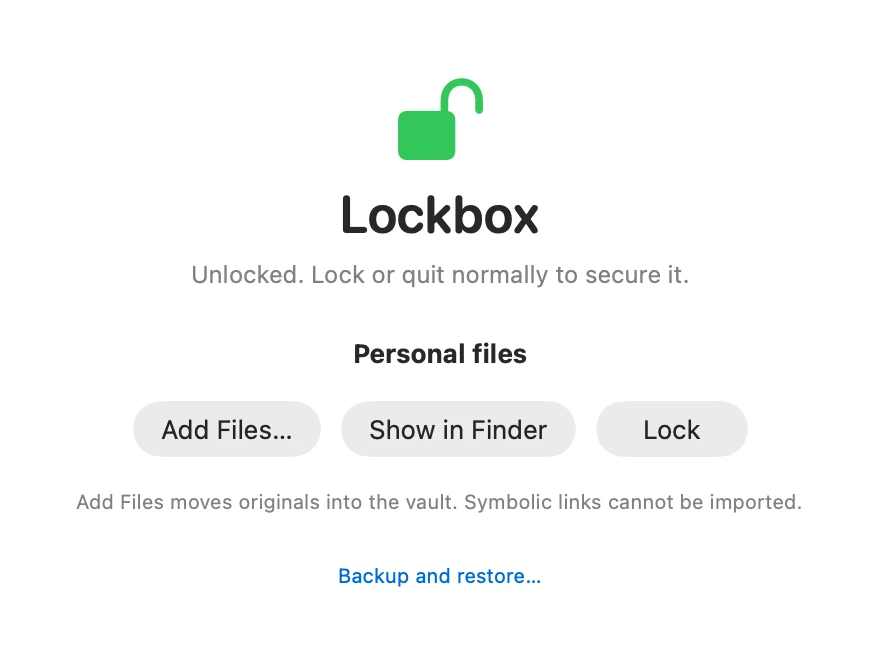
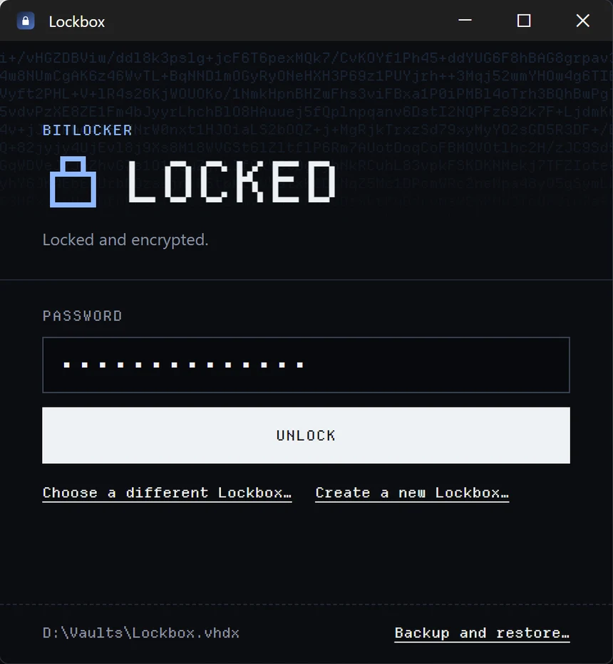

Mac and Windows both come with strong disk encryption, but keeping a folder of private files in it means managing an encrypted disk image or a BitLocker drive by hand. The originals stay behind when you copy files in, and the vault stays open until you remember to eject it.
Lockbox wraps that in one small app. It moves files into the vault rather than copying them, locks when you close the vault’s window, and says Locked only after it has checked.
How Lockbox compares with managing an encrypted disk by hand
System encryption
Moves files in
Locks when you close it
By handDisk Utility or BitLocker
Yes
No
No
Lockbox
Yes
Yes
Yes
02
Making it
I designed and built both apps: a native macOS app in SwiftUI, and a Windows app built with Tauri, whose Rust backend drives BitLocker through PowerShell. They share their behaviour and wording, so Lockbox works the same way on both systems even though the encryption underneath differs.
Visual direction
The first Mac version looked like any system utility, and its soft, rounded type didn’t say security. I wanted the app to look like what it does. After trying engineered capitals, a hardware token and a security document with a seal, I settled on Ciphertext: the vault’s state is the headline, set in Departure Mono beside a pixel lock, and while the vault is verified locked, a field of ciphertext fills the header behind it. Unlocking clears it.
The state never depends on colour alone. The headline word and the lock change with it, and the ciphertext appears only for a lock Lockbox has confirmed.
Fig. 1

1aFirst version, macOS

1bCiphertext, Windows
03
Trade-offs
Locked means checked
Problem
An eject can fail quietly or leave the encrypted disk attached, and an app that trusts it will say Locked while the files are still readable.
Choice
Lockbox ejects without forcing, then checks that the disk is really gone before it says Locked. A check that fails or times out shows Unverified, never Locked.
Cost
If a file in the vault is still open, the vault stays unlocked with an error instead of being forced shut, so you sometimes have to close an app before you can lock.
YouLockbox
Youchoose Lock, close the vault’s window or quit
Lockboxejects the vault without forcing it, then checks that the disk is gone
What Lockbox shows
Locked
The disk is gone.
Unlocked
A file in the vault is still open, so the eject failed. An error says so.
Not locked
The drive is gone but the disk is still attached. Finish Locking detaches it.
Unverified
The check failed or timed out.
What happens when you lock, and the state Lockbox shows after its check
System encryption, not its own
Problem
Encryption code is where security tools most often go wrong, and a vault format of my own would have needed its own audit.
Choice
Lockbox drives the encryption each system already has: AES-256 encrypted disk images on macOS, and BitLocker inside a virtual disk on Windows.
Cost
Windows Home can’t turn on BitLocker, so creating a vault needs Pro or above, and Windows asks for administrator approval each time Lockbox starts. A vault made on one system doesn’t open on the other.
One password, no reset
Problem
Any recovery key would be a second way into the vault.
Choice
The password is the vault’s only key. Lockbox never stores it, and hands it to the system on standard input, so it never appears in arguments, settings or logs.
Cost
Lose the password and the files are gone for good.
04
Review
The Windows app runs with administrator rights, because Windows needs them to attach a disk image. That makes anything it loads a way in for other programs running as you. Before the Windows release, two AI agents reviewed every source file of both apps, and each finding was confirmed in the code before it was fixed.
One fix broke the app. Turning off PowerShell’s module autoloading also stopped a module BitLocker needs, so Windows 0.1.1 couldn’t create or unlock vaults. The unit tests passed because none of them run as administrator. Tests against real BitLocker vaults caught it, and 0.1.2 fixed it the same day, with a new test that checks every command the scripts need.
Finding
Fix
HighSystem folders were found through an environment variable any program can change.
Lockbox asks Windows for them.
MediumThe password could reach PowerShell’s event log.
It is read one character at a time, so no command ever holds it.
MediumA DLL placed next to the app could load into it.
DLLs load only from System32.
MediumThe vault file could be swapped between the check and the unlock.
Lockbox holds it open from the check until the unlock finishes.
Findings from the review of the Windows app, fixed in 0.1.1 and 0.1.2
05
So far
Lockbox is free for Mac and Windows. Neither app is signed yet, so macOS and Windows warn before the first launch. Signing comes next, and the Ciphertext look reaches the Mac in its next version.
Mac 0.2.7
Mac 0.2.8Checks the encryption of a vault that is already open.
Windows 0.1.0The first Windows release, in the Ciphertext style.
Windows 0.1.1The review’s fixes. Couldn’t create or unlock vaults, and was replaced the same day.
Windows 0.1.2Fixes 0.1.1 and holds the vault file open while it is in use.
Releases so far
What I learned
Say only what you’ve checked.
Lockbox shows Locked only after it confirms the disk is gone, and its label names only what it verifies: BitLocker, not the cipher inside it.
Test the path people take.
Windows 0.1.1 passed every unit test and still couldn’t create a vault, because none of the tests ran as administrator.
Disclose what you can’t fix.
WebView2, which draws the Windows window, runs partly outside the administrator process, where other programs running as you can reach it. No setting closes that, so the documentation says so.
Mac, macOS and Finder are trademarks of Apple Inc. Windows, BitLocker and WebView2 are trademarks of Microsoft Corporation. Lockbox is an independent app, not affiliated with or endorsed by either. Type: Departure Mono (SIL OFL). Icons: Pixelarticons.